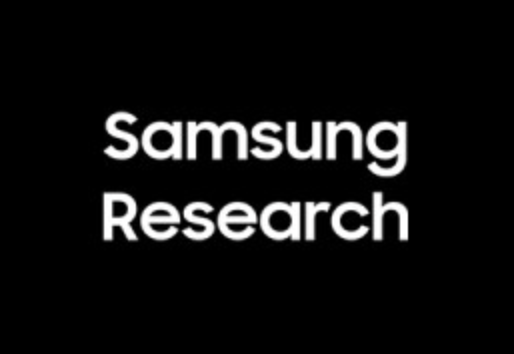
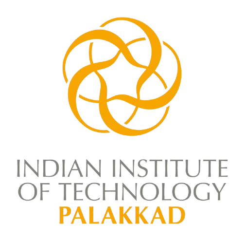

Experiences
 Apr 2025 - Present
Apr 2025 - Present
Research Scientist, Anima Lab
Caltech & Argonne Lab
Research Scientist, Anima Lab
Caltech & Argonne Lab
The Problem: In 2018, Frances won her Nobel Prize for pioneering directed evolution. While it is a widely used method to engineer enzymes, it has limitations when navigating a protein's "fitness landscape." It often struggles to explore this complex terrain effectively, frequently getting stuck in local maxima and failing to discover the global maximum that represents the best possible enzyme for a given function. The goal of this project is to use modern deep learning and generative models to better explore this landscape and address these limitations. This project is still an ongoing work. To discuss further, please reach out via email.
- Implemented the core PLM fine-tuning infrastructure, utilizing Supervised Fine-Tuning (SFT) and Group Relative Policy Optimization (GRPO)
- Jointly Engineered an iterative sequence-filtering pipeline where the PLM generates sequences that are evaluated against biophysical criteria; the survivors are then used to further fine-tune the model using SFT, priming it to generate functionally superior candidates.
- Integrated cutting-edge AI with traditional computational chemistry, bridging modern deep learning models (LigandMPNN, RFDiffusion, ESMFold, TrustAffinity) with traditional Molecular Dynamics (MD), Molecular Docking (AutoDock Vina), and Density Functional Theory (ORCA) to model various stages of enzyme function.
- Conducted cross-disciplinary research in both ML and Biochemistry, building domain knowledge from the ground up to understand the chemical rules governing enzyme interactions and translate those biological mechanisms into AI architectures.
Research Scientist, Xie Lab
City University of New York & Weill Cornell Medicine
Research Scientist, Xie Lab
City University of New York & Weill Cornell Medicine
- Pioneered an end-to-end generative pipeline for phenotype-driven drug discovery (MolGene-E), bypassing traditional structure-based docking by directly mapping target gene expressions to novel small molecules.
- Engineered a DALL-E-inspired latent diffusion architecture to handle variable-length SELFIES strings, utilizing an encoder-decoder network to compress chemical representations into a fixed-length continuous latent space for diffusion modeling.
- Implemented contrastive learning frameworks to align the joint embedding space between transcriptomic profiles (healthy vs. diseased) and SELFIES, allowing the diffusion model to generate targeted molecules conditioned purely on phenotypic data.
- Conducted multi-cell-line scaling analysis, uncovering critical data sparsity and noise limitations in zero-shot biological mapping. This insight proved that standard LLM architectures must be heavily augmented with first-principle biophysical inductive biases, directly informing future AI-for-Science methodologies.

Sep 2022 - Sep 2023ML Engineer
Samsung R&D India
ML Engineer
Samsung R&D India
- Engineered an end-to-end 2D CNN pipeline to process raw Ultra-Wideband (UWB) sensor data, translating 2D Channel Impulse Response (CIR) radargrams into actionable object and terrain predictions.
- Designed and implemented a closed-loop active learning system to overcome the lack of benchmark UWB data, iteratively capturing proprietary sensor readings, applying signal processing for denoising, and retraining models.
- Spearheaded product ideation and proof-of-concept demonstrations leveraging UWB for zero-light spatial awareness, specifically targeting night-mode camera enhancements for lower-tier devices and collision-detection accessibility features for visually impaired users.
CDS Intern
Indian Institute of Science
CDS Intern
Indian Institute of Science
- literature reviewed and prototyped data assimilation using Message Passing Networks (PGMs and MPNNs) to estimate the joint distribution P(Discretized Ocean State | Prior Belief, Observations, Sensor Noise), starting with simple joint Gaussian testbeds to ocean velocity fields.
- Implemented and integrated a Trajectory Transformer pipeline (coupled with beam search) directly into the main AUV codebase, utilizing generated simulation data for complete model training and evaluation.
- Conducted rigorous comparative analysis between Trajectory and Decision Transformers, yielding the key architectural insight that prepending a destination token to the Decision Transformer’s sequence significantly improved its performance.
- Executed extensive experimental validation across 8 complex Double Gyre flow test cases, serving as second author for the resulting AAMAS 2023 publication on intelligent onboard routing.

July 2018 - July 2022B.Tech, Computer Science and Engineering
Indian Institute of Technology, Palakkad
B.Tech, Computer Science and Engineering
Indian Institute of Technology, Palakkad
- Course Work — built the theoretical backbone of my training, leaning into
the
rigorous end of the curriculum across three fronts:
- Theoretical CS: Discrete Mathematics, Logic for Computing, Theory of Computation
- Mathematics & Sciences: Multivariable Calculus & Linear Algebra, Probability · Stochastic Processes & Statistics, Numerical Analysis, Quantum Information · Communication & Computation, Life Sciences (Biology)
- Machine Learning & AI: Artificial Intelligence, Reinforcement Learning, Foundations of Data Science & ML, Natural Language Processing, Foundations of Linguistics
- Sparse Reward RL Research — an open-ended research project with Dr. Chandrashekar, using reward shaping via message passing in graph neural networks to densify sparse RL reward functions; an Actor-Critic agent with online GCN training cut regret by 24% and converged 35% faster to the optimal policy in a grid-world testbed.
- Editor of The Fleet Street — one of 5 editors (started as a correspondent) of IIT Palakkad's student media, researching and publishing on student elections, faculty/alumni interviews, and inter-IIT fests. During COVID I conceived and hosted a fireside-chat series with faculty, ex-faculty, and alumni to keep the community connected.
- Gold medal at the Inter-IIT Tech Meet (2018–19) at IIT Bombay for an autonomous pesticide-spraying robot for small-scale Indian farmers — an end-to-end build (chassis, electronics, controls, code) that first hooked me on systems engineering.